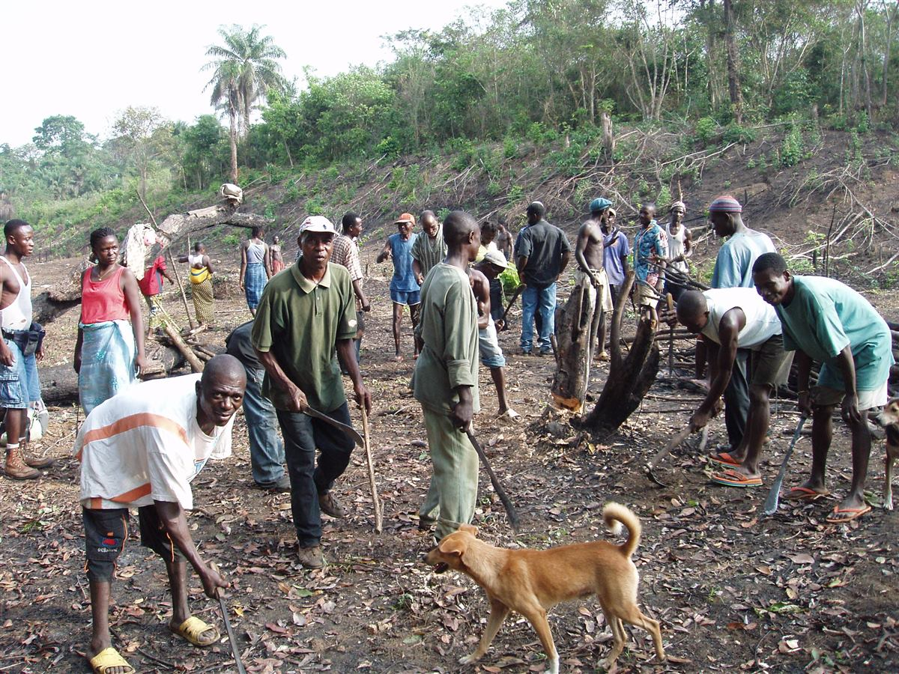

Coordinate resources. Connect communities.
AYM is incorporated in Wisconsin and describes its US role as coordinating the movement abroad and helping resources reach communities.
Coordination & support
Bringing people and resources together
AYM’s US page describes a mission to bring people and resources together to address poverty in rural African communities through innovative strategies.
